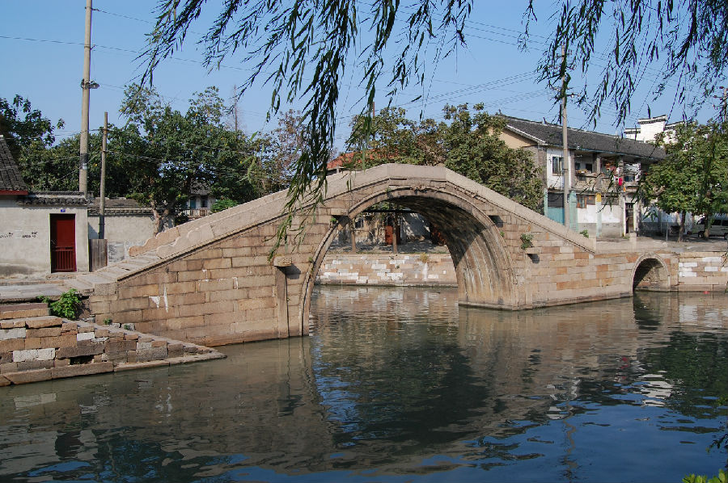

嘉兴市文物保护网 · 市级文物保护点 · 2020-11-02 · 原文

问松桥位于嘉兴市秀洲区新塍镇秀水社区中北大街，东西跨河港、南邻市河。据文献记载为清道光二十二年建造。古传梁敬帝年间（555-557）南军杀伐至此，问松树云：“前不可去耶？”松为点头，桥亦随时断，军不得渡而去。因此得名问松桥。1991年冬，动工重铺桥石阶，增补两侧石栏，改建东堍涵洞。1992年竣工。现系双孔有栏石拱桥，全长28.22米，桥面宽2.98米、正中定心石1.26×1.36平方米，两侧栏板为重修，当中大拱净跨9.6米、矢高5.10米，小拱净跨3.2米，东西落坡各设石阶28级和32级。南北桥额刻“问松桥”，小桥孔南北侧刻小字“重建问松桥”、“92年重修”，无桥联，桥身无纹饰。问松桥历史悠久，造型独特，做工考究，是新塍古镇重要的历史建筑，具有较高的历史和科学价值。2002年公布为嘉兴市文物保护点。